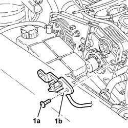
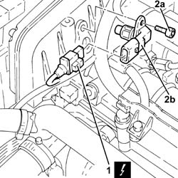
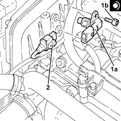

1060G22 cam angle sensor - r r
- Path
- Procedures > 10 ENGINE > 1060 DIESEL FUEL INJECTION > 1060G pressure pump electric control > 1060G22 cam angle sensor - r r
- Kind
- repair procedure (removal / refitting; the operation number is the code)
- Applies to
- engines: 1.9 JTD 8v , 1.9 JTD 16v, 2.4 JTD 10v, 2.4 JTD 20v; all production periods
- Interactive page
- https://sloeber94.github.io/elrnDB-a156/en/#/3237813
Applies to: engines: 1.9 JTD 8v , 2.4 JTD 10v; all production periods
 Removing
Removing
 Refitting
Refitting4450B10 Front WHEEL (one) - R.R.
7055B64 Engine compartment DUST shield in front wheel arch (one), left or right - R.R.
1092G10 single engine belt r r
1092A12 crankshaft pulley - r+r for versions with air conditioner
1032D12 timing system protective cover(s) - r + r
1008C10 power unit upper reaction link r r .
1016A10 sound-proofing cover - r + r .
1008C14 engine link bracket - r r
1032B61 timing belt pulley - r r
1. Undo the bolts (1a) and remove the cam angle sensor (1b).

Applies to: engines: 1.9 JTD 8v , 2.4 JTD 10v; all production periods
Refitting
RemovingFit the cam angle sensor and fix it using the bolts.
1032B61 timing belt pulley - r r
1008C14 engine link bracket - r r
1016A10 sound-proofing cover - r + r .
1008C10 power unit upper reaction link r r .
1032D12 timing system protective cover(s) - r + r
1092A12 crankshaft pulley - r+r for versions with air conditioner
1092G10 single engine belt r r
7055B64 Engine compartment DUST shield in front wheel arch (one), left or right - R.R.
Applies to: engines: 1.9 JTD 16v; all production periods
Removing
RefittingProceed with removal 1016A10 sound-proofing cover - r + r
Ensure that the ignition key is in the OFF position, then disconnect the negative battery terminal (-).
 | Name | Connector |
|---|---|---|
- | Battery |
1. Disconnect the electrical connection from the cam angle sensor.
| Name | Connector |
|---|---|---|
1 | Timing sensor |
2. Undo the bolt (2a) and remove the cam angle sensor (2b).

Applies to: engines: 1.9 JTD 16v; all production periods
Refitting
Removing1. Plact the cam angle sensor (1a) back in its housing and secure it tightening the bolt (1b) to the recommended torque.
 | Fastening | Component | Ø | Value (daNm) |
|---|---|---|---|---|
1b | Bolt | CAM ANGLE SENSOR | M6 | (Cylinder head side 08 10 |
2. Connect the electrical connection to the cam angle sensor.

Applies to: engines: 1.9 JTD 16v; all production periods
Connect the negative (-) battery terminal
Proceed with refitting 1016A10 sound-proofing cover - r + r
Applies to: engines: 2.4 JTD 20v; all production periods
Removing
RefittingEnsure that the ignition key is in the OFF position, then disconnect the negative battery terminal (-).
| Name | Connector |
|---|---|---|
- | Battery |
Proceed with removal 1016A10 sound-proofing cover - r + r .
1. Disconnect the electrical connection from the cam angle sensor.
| Name | Connector |
|---|---|---|
1 | Timing sensor |
2. Undo the bolt (2a) and remove the cam angle sensor (2b).
Applies to: engines: 2.4 JTD 20v; all production periods
Refitting
RemovingPlace the cam angle sensor back in its housing and fix it using the bolt to the specified torque.
| Fastening | Component | Ø | Value (daNm) |
|---|---|---|---|---|
- | - | - | - | - |
Connect the electrical connection to the cam angle sensor.
Proceed with refitting 1016A10 sound-proofing cover - r + r .
Connect the negative (-) battery terminal.
Topics linked from this page (13)
- 1008C10 power unit upper reaction link r r
- 1008C14 engine link bracket - r r
- 1016A10 sound-proofing cover - r + r
- 1032B14 toothed timing belt - r + r for timing adjustment or replacement versions with air conditioner
- 1032B61 timing belt pulley - r r
- 1032B62 a/c duct pulley - r r
- 1032D12 timing system protective cover(s) - r + r
- 1092A12 crankshaft pulley - r+r for versions with air conditioner
- 1092G10 single engine belt r r
- 4450B10 Front WHEEL (one) - R.R.
- 7055B64 Engine compartment DUST shield in front wheel arch (one), left or right - R.R.
- A1B Battery ( BATTERY NEGATIVE )
- K47 Timing sensor